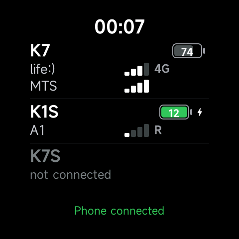

Android-приложение для Bluetooth SIM-адаптеров
SIM Bridge
SIM-карты из Bluetooth SIM-адаптеров IKOS K7, K7S и K1S — в вашем Android-телефоне: звонки с голосом, SMS, сигнал и заряд — для одного адаптера или нескольких сразу.
- Бесплатно
- Без рекламы
- Без аккаунта
- Без доступа в интернет
- Полностью на русском

Что умеет
Всё, что могут SIM-карты в адаптере, — в телефоне в вашем кармане.
-
Звонки
- Звонки и ответ через любую SIM в любом адаптере, голос по Bluetooth
- Звонки идут через системную телефонию Android: ответ с экрана блокировки, Bluetooth-гарнитуры, в машине и на часах
- Недавние вызовы, уведомления о пропущенных, номеронабиратель с выбором SIM и тоновым набором
-
SMS
- Отправка и приём SMS, в том числе длинных, переписки с поиском
- «Скопировать код» из SMS с кодом одним касанием, «Прочитано» прямо из уведомления
- Неотправленное SMS можно отправить ещё раз — без дублей
-
Адаптеры и SIM-карты
- Несколько адаптеров одновременно, у каждого свои SIM-карты
- Сигнал, сеть и заряд каждого адаптера в верхней строке, как в строке состояния телефона
- Каждая сеть названа по бренду и стране, с логотипом оператора
- Карточка на каждую SIM: имя, номер и оператор переходят вместе с SIM в любой адаптер или слот телефона
-
Не теряет связь
- Привязка через системный выбор устройства, связь держится при выключенном экране
- Сам переподключается, когда адаптер снова рядом
- Следует за режимом полёта телефона
-
Часы Xiaomi
- На часах Xiaomi Vela (Watch S5) — приложение с сигналом и зарядом адаптеров
- Кнопки «Ответить» и «Отклонить» для звонка прямо на часах
- Любые часы, гарнитура или машина, подключённые к телефону, видят звонки как обычные
-
Приватность
- Без аккаунта, рекламы и аналитики
- У приложения нет доступа в интернет: сообщения, звонки и контакты остаются на телефоне
- Контакты читаются на месте, чтобы показать имена, и никуда не копируются. Политика конфиденциальности
Какие адаптеры
Нужен совместимый Bluetooth SIM-адаптер с SIM-картой и Android-телефон (Android 8.0 или новее).
-
IKOS K7
- Звонки и SMS
- Точка доступа Wi-Fi, мобильные данные и настройки APN
-
IKOS K7S
- Звонки и SMS
- Точка доступа Wi-Fi, мобильные данные и настройки APN
-
IKOS K1S
- Звонки и SMS
- Кнопка адаптера работает как пульт для камеры
SIM Bridge работает с теми же адаптерами, что и приложения SIMPlus и SIMPlus+. Это независимое приложение, оно не связано с IKOS и разработчиками SIMPlus.
Вопросы
Нужно ли ещё какое-то приложение?
Нет. SIM Bridge сам подключается к адаптеру. Адаптер держит одно подключение, поэтому если к нему подключено другое приложение, сначала отключите или удалите адаптер в нём.
Нужен ли SIM Bridge интернет?
Нет. У приложения нет разрешения на доступ в интернет. SMS и звонки идут через SIM-карту адаптера и вашего оператора, а всё, что приложение хранит, остаётся на телефоне.
Можно подключить несколько адаптеров?
Да. Подключите несколько адаптеров сразу: у каждого видны свои SIM-карты, сигнал и заряд, а SIM для звонка или SMS вы выбираете сами.
Ответят ли часы или машина?
Да. Звонки идут через системную телефонию Android, поэтому подключённые к телефону Bluetooth-гарнитура, машина или часы звонят и отвечают, как при любом звонке. На часах Xiaomi Vela приложение SIM Bridge для часов ещё и показывает сигнал и заряд адаптеров.
Какие языки и телефоны?
Полностью на русском и английском, светлая и тёмная тема. Поддерживает складные телефоны, включая внешний экран Xiaomi MIX Flip.
Сколько стоит?
SIM Bridge бесплатный и без рекламы.
О приложении
SIM Bridge — независимое приложение разработчика Siarhei Bakatsiuk. Оно не связано с IKOS и разработчиками других приложений для этих адаптеров и не одобрено ими.
IKOS и Xiaomi — товарные знаки их владельцев; здесь они названы только чтобы указать, с какими устройствами работает SIM Bridge. Google Play — товарный знак Google LLC.